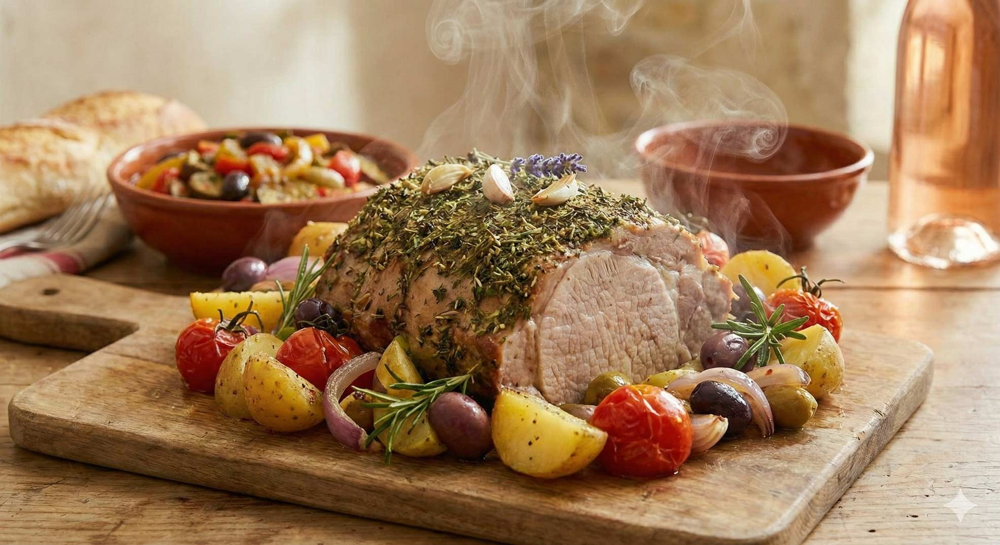

Schweinebraten de Provence
Zutaten für:
| 800g | Schweinerücken |
| 250ml | Rotweinessig |
| 250ml | Rotwein, trocken |
| 250ml | Wasser |
| 2 | Lorbeerblätter |
| 25 | Pfefferkörner |
| 2 | Zwiebeln, rot |
| 1 | Karotte |
| 1 | Lauchstange |
| 2 EL | Olivenöl |
| 4 | Knoblauchzehen |
| 2 TL | Kräuter de Provence |
| 1/2 TL | Schwarzer Pfeffer |
| 1 TL | Senf |
| 125ml | Gemüsebrühe |
| 2 | Thymianzweige |
Zubereitung
Fleisch waschen, trockentupfen. Zwiebeln in Ringe, Karotte und Lauch putzen und kleinschneiden. Essig, Wein und Wasser mit Lorbeerblättern, Pfefferkörnern und kleingeschnittenem Gemüse aufkochen. In den erkalteten Sud das Fleisch über Nacht einlegen.
Dann Fleisch abtropfen lassen. Öl, zerdrückten Knoblauch und Gewürze gut verrühren. Den Braten damit bestreichen, in einen Bräter legen. Die restliche Öl-Kräutermischung, Brühe und 1/8 l durchgeseihte Marinade zugießen. Thymianzweige hineingeben. Im vorgeheizten Ofen bei 200ºC 90 Minuten, dann nochmals 15 Minuten bei 240ºC braten.
Fleisch herausnehmen, Fond abseihen, wenn nötig, entfetten. Nach Belieben den Fond mit Mehl oder Speisestärke andicken.
Guten Appetit!
Rezept erstellt von:
 Basti
Basti